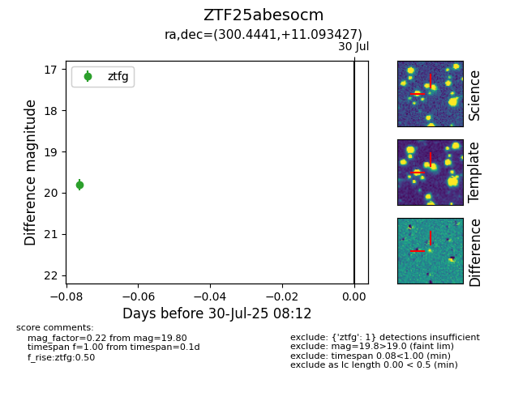

Target ZTF25abesocm at 2025-07-30 08:12, see:
FINK: fink-portal.org/ZTF25abesocm
Lasair: lasair-ztf.lsst.ac.uk/objects/ZTF25abesocm
ALeRCE: alerce.online/object/ZTF25abesocm
alt names
ZTF25abesocm (ztf,fink)
coordinates:
equatorial (ra, dec) = (300.4441,+11.09343)
galactic (l, b) = (51.0691,-10.14377)
photometry
last ztfg=19.80
1 ztfg detections
